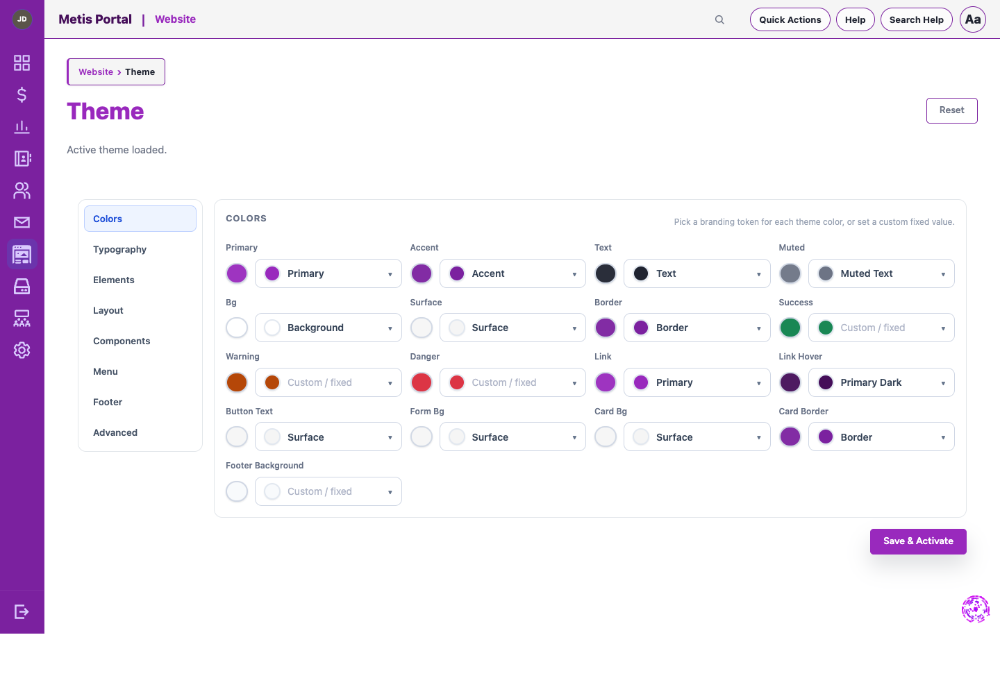
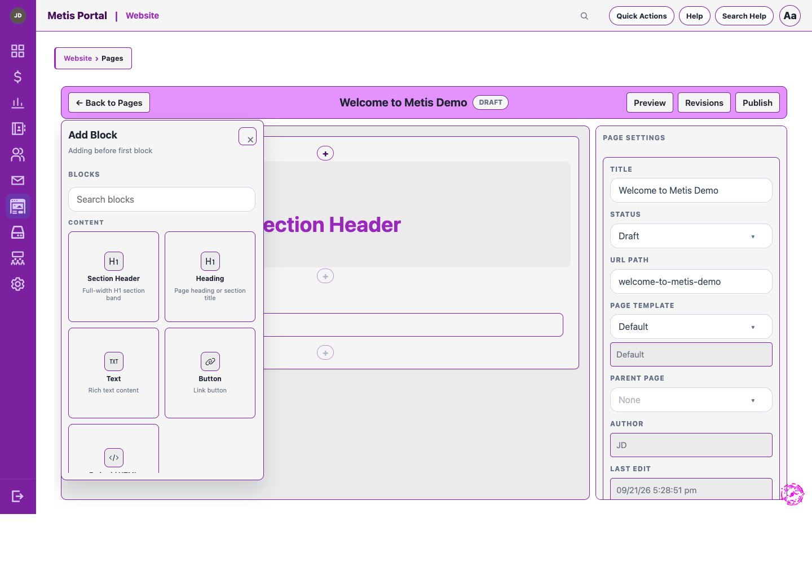

See each page, its URL, status, and publishing actions.
Build on a visual canvas with blocks and page settings together.

Engagement module
Manage your public website with structured pages, posts, menus, media, publishing tools, and first-party analytics.
See each page, its URL, status, and publishing actions.
Build on a visual canvas with blocks and page settings together.
Review drafts, published posts, categories, and status.
Write updates with metadata and publishing settings together.

Connect the public site to your organization’s color tokens.
Set readable type styles and hierarchy across the site.
Control page widths, spacing, and visual structure.
Make cards, buttons, forms, and shared UI feel consistent.
Shape the navigation visitors use to find what they need.

Choose purpose-built blocks from one library instead of assembling pages from raw code.
Use headings, text, buttons, columns, card grids, and calls to action to compose a page.
Add forms, events, posts, newsletters, donations, and people directories where they belong.

Website analytics use no external provider and respect Do Not Track and Global Privacy Control.